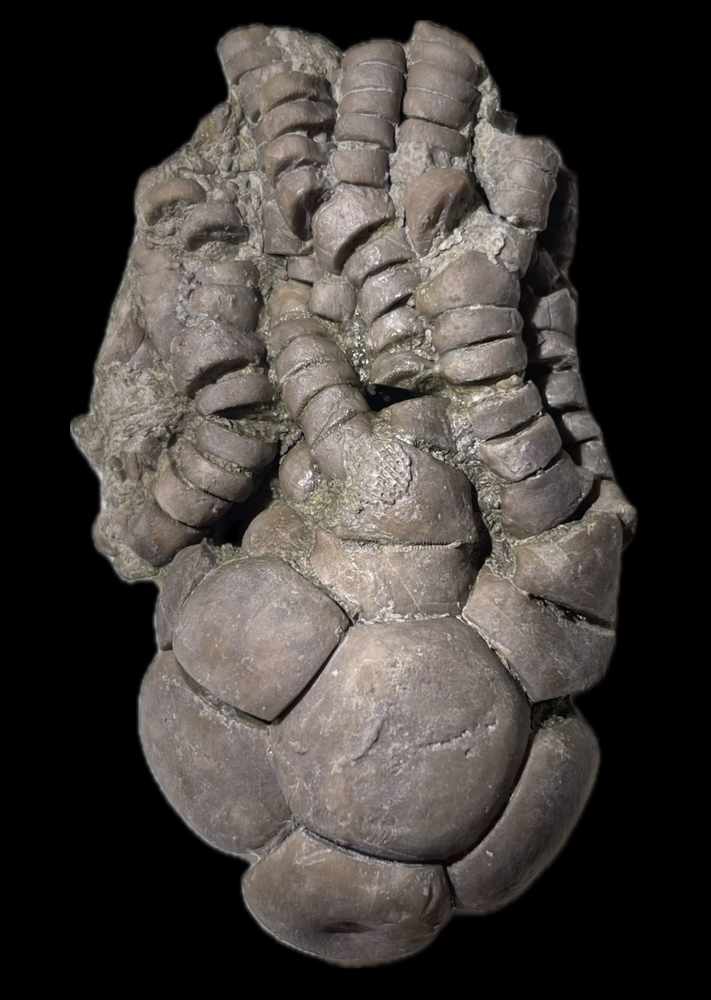

Crinoid
Size: 6.5 cm crown
Staphylocrinus is a fascinating stemless crinoid similar to the likewise stemless Agassizocrinus. These crinoids appear to have fused their infrabasal plates into singular solid infrabasal disks/cones and detached from their stems during development like modern free-swimming comatulid crinoids, though unlike comatulids they presumably lived a benthic lifestyle on the seafloor. Oftentimes the infrabasals show evidence of this process as a scar or depression, and sometimes the remnant stem can even be observed in cross-section (Burdick & Strimple 1969). |
 |
|---|
Copyright © 2024 by Samuel Kim, all rights reserved